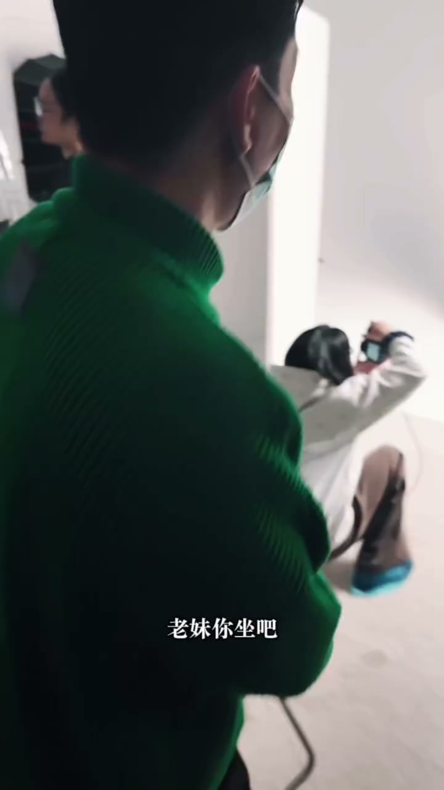
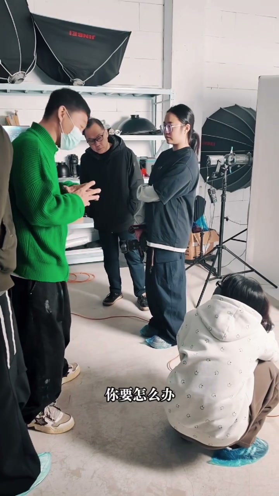

内容要点
这段视频围绕「《透视+畸变=摄影师的魔法》」展开，按时间介绍其中的关键环节。我问你做吧 我有问题问你。
开场引入
我问你做吧 我有问题问你。我后仰一点。好了 小网先生 身体往后仰。那你低机位 坐地上 广角给我拍一下。好 慢慢拍完了。你告诉我 现在他整个身体上面。离你最近的地方是哪里。这腿是不是也是离得近的。然后你看 你在拍摄的时候。有没有显得脚大 腿粗

[00:00] 开场引入相关画面。
Opening introduction footage.
关键技巧展开
脸变得瘦一点 你要怎么办。你刚才是坐地上的。他也是坐椅子上的 对吧。你站起来 慢慢你再往后仰。我们把胶级都让他用得怎么样。用短一点。你这个腿跟刚才那张。你看脸 看腿 看感觉。你看你这个是不是显得腿。腿就长的同时变粗

[00:32] 关键技巧展开相关画面。
Footage expanding on the key techniques.
总结
脸变得瘦一点 你要怎么办。